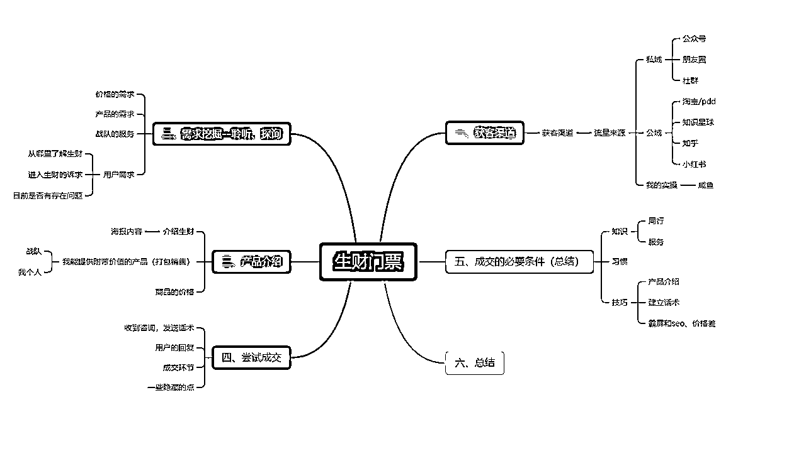
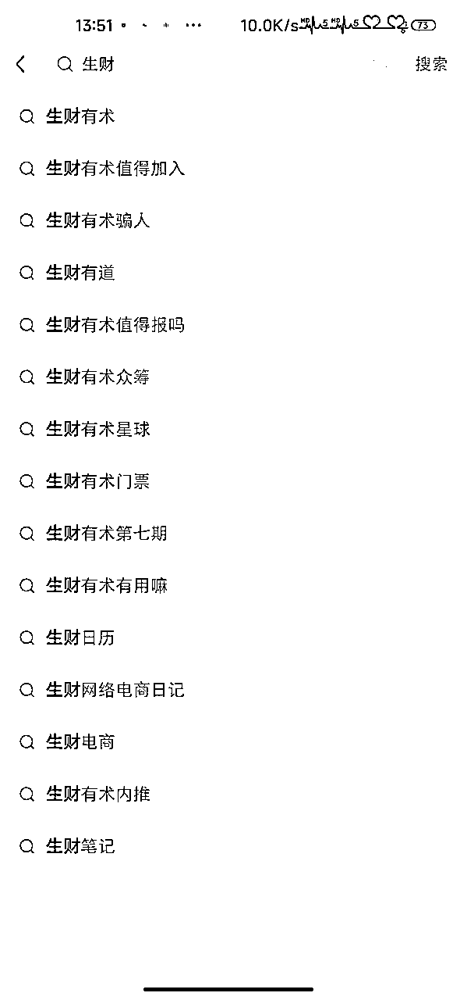
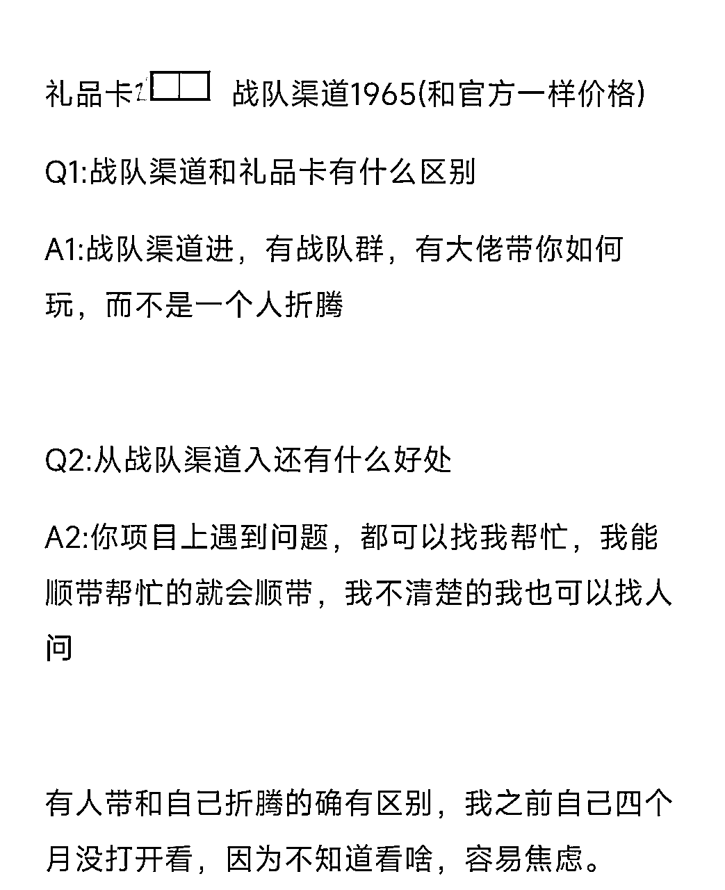

来源：https://f8nnmv2amz.feishu.cn/docx/E0aFdosjUobxU7xEQeCc7y8snyb
你好呀，我是小怪兽，很多人都在 418 进行私域生财拉新，我另辟蹊径，成功在咸鱼打通陌生流量成交，并拿到结果，数据如下：
时间跨度：7 天
闲鱼咨询量：300+（多号操作未去重）
转换微信好友数量：81 个【27%加微信转换】
成功转换成交数量：41 个【50.6%微信好友转换】
最短成交时间：15 分钟
最长成交时间：48 小时
平均成交时间：2.6 小时
1 小时内成交个数：15 个
单日最高成交数量：10 个
身边朋友们拉新通常是发朋友圈，公众号，拉群成交。而忽略了公域平台上仍能挖掘很多流量。
而在大家印象中，咸鱼淘宝 pdd 都是卖一些盗版、出租之类的内容。我通过在咸鱼上做 SEO，霸屏，多账户上架引流拉新，我用销售产品的套路，引道私域进行闭环成交。接下来全文 5200 字，分享讲解，我这次的实操过程，希望对你有帮助。

我把销售的天龙八部，聆听，探询，产品介绍，支持，举证，解说，反引，成交 选取部分适合我的内容整理实操，接下来开始分享我的实操内容。
公众号：自己在某个领域深耕，并有一定的粉丝积累，在项目发布的时候有一定的宣发效果。
朋友圈：自己朋友圈的人，都是对知识付费、项目有需求，在朋友圈宣传拉新是一个比较容易即时触达的地方。即时性分享自己与生财故事、自己在生财中取的成绩、自己的成长经历
社群：自己做过一些社群，并且有一定的信任基础，愿意为你付费或者信任你推荐的产品。去讲生财能得到什么、发放体验卡、倒计时群发售
在公域平台做流量的时候，容易看到所谓的共享账号，盗版等（不建议！不建议！不建议）操作，只是漫无目的看看，不亲自下场弄脏手，一定会好高骛远，一定会无法落地。
淘宝/PDD：更多的是卖一些资料库，比如第六期生财文档（引流产品）、小报童、共享账号，搜索关键词，生财，更多的是第六期生财文档（引流产品）、小报童、共享账号，对于小白来说，把生财搜索关键词做到前排有一定难度，而且更多的是泛流量，落地需要一些能力。
知识星球：我把知识星球归属在公域，因为知识星球慢慢也可以搜到自己没有加入星球的内容，这个时代是一个表达者红利的时代，只需要不断地去记录和整理、分享一些有价值的东西，就能被人看到。
知乎：星球里面也有很多大佬，在知乎上不断地去更新自己的内容，生财里面有很多大佬，做好物分享、项目实战、等等，他们都有一些追随者（粉丝），在 418 拉新的时候， 有一定的积累。
小红书：搜索生财关键词，下拉关键词，如下图，因为小红书是推送为主，小白承接流量并没有一个完善的框架，哪怕有人询问如何加入生财，为何要从你这里加入生财，在小红书内部，存在一些敏感词，直接成交存在一些问题。

刚开始发现这个渠道的时候，我对他的理解，误以为他是大量的贩卖盗版之类的流量渠道。
如果你去搜索，生财礼品卡、生财龙珠门票、生财龙珠、生财优惠等关键词，甚至生财 3 天体验。
潜意识的感受是，这些人群肯定不行，他们都是盗版人群。
而我反过来思考，正因为在咸鱼上进行搜索，正是精准的消费流量（当时抖音团购我就是这么干的，找到精准人群，成交他，具体可以参考航海手册 ）
万一这部分人，只是因为他不懂生财，他其实对价格是不敏感的，想更进一步了解生财呢，那岂不是我的机会就来了。说干就干，去实际测试就知道了
官方宣传：生财公众号，生财视频号，鱼丸等在外的线索
个人拉新：自己拉人进生财
战队拉新：各大生财大佬，组织抱团形成战队，提供战队福利，进行拉新
礼品卡产出渠道
龙珠兑换：一龙珠 5 门票 https://t.zsxq.com/0dti6cgFz
礼品卡购买：知识星球公众号->我的星球->礼品卡（和当前门票一样价格）
自己能力出色，被官方邀请进生财分享之类，可能有机会，具体可以去挖掘一个之前的内容，线索#生财合伙人
聆听：
探询：在恰当的时候问恰当的问题。
在开放（公域）：需要了解用户的更多信息，引导进入微信，咸鱼会有敏感词、违规词存在
封闭（私域）：用户说我回答，我讲用户提问。给予用户需求进行认可和否定。
这里可以挖掘出用户的需求，加入生财想得到什么，项目是否存在疑惑等等
而我挖掘到三个比较刚需的需求。
通常会遇到以下几个问题：
Q1："星球那么贵，能不能便宜点" 、"会不会是割韭菜的" 、"付完后，还会有其他付费吗" 、"航海要怎么参加，需要花钱吗"、”为什么别人都能返利，你这里不行“
A1:遇到这类人群对他们进行区分，是否真的对价格敏感，因为只有价格这个唯一选项，那肯定是比价，而有新的选择出现，就会进行一定筛选。
Q2:对价格不是真敏感的，对其他内容感兴趣
A2:引导他讲出自己的诉求，看是否能进行解答
区分出是真价格敏感，还是假价格敏感的人。
Q1:”生财和其他星球有什么区别吗“、”里面会不会也是 28 定律“
A1:对生财有疑问的很多顾客，都是通过线索（朋友圈、社群）挖掘了解到生财，本身没有一个明确的答案，给与一个肯定的解答，打消疑惑
Q2:对小航海不了解
A2:对航海进行一个介绍，里面分别有哪些角色，志愿者是干嘛的，领队是干嘛的，教练是干嘛的。航海手册，打开
Q3：我觉得生财怎么样
A3：我把生财当作工具来用，需要的时候直接关键词搜索，生财里面的内容搜索的大部分比较全。
这里建议实战的时候，实事求是就好了，没必要为了成交刻意去瞎编一些东西。
Q1:从哪里了解到生财
A1:这里算一个很重要的线索，可以侧面了解顾客对什么感兴趣，比如我是通过 XXX 资料里面的 tiktok 看到了生财介绍，那么这个人大概率是对 tiktok 感兴趣。
Q2:进入生财的需求
A2:当你能提前预判用户的需求，并且在他前先说出，很大概率能进行成交，这时候的主动权在你手上。
Q3:目前是否存在问题
A3:比如自己做项目遇到了瓶颈，或者野蛮生长，需要一个体系化的建立。或者对某个内容感兴趣。
线索的来源，不仅仅可以来源于口中，也可以是朋友圈，也可以是咸鱼销售情况，具体实际来决定
什么是产品介绍：
我策划的这个方案是最适合您的方案
不同的客户需要不同数量的信息来做最后决定
不要完全透露，尽量要留有余地！
可以参考宣传海报，简单整理几个标题
1）每个月挖掘上千条赚钱的线索
2）提炼赚钱高手的思维
3）每年 100+场实战（航海）
4）高手链接深度合作（见面会、同城见面会等）
https://t.zsxq.com/0dIvapQvU 联合推广
生财众多大佬们，一起抱团拉新，并自己给出了一些福利课程。
在公域引流的时候，很容易犯一个错误，主动去宣传战队内容，这里会出现消费者对战队有抉择。
选择这个战队还是选择另外一个战队。
简单来说，销售是把用户引导进你自己的框架里面，我占据主导作用，我引导用户来进行下单，而不是把他从这个选择，换到另外一个选择里面。
Q1:战队渠道和礼品卡有什么区别
A1:战队渠道进，有战队群，有大佬带你如何玩，而不是一个人折腾
Q2:从战队渠道入还有什么好处
A2:你项目上遇到问题，都可以找我帮忙，我能顺带帮忙的就会顺带，我不清楚的我也可以找人问
并且描述，自我最开始的经历，刚开始加入生财的迷茫或者无法快速运用上手
销售是看当前，不看长远，在公域成交，要迅速。
通过赠课或者社群或者龙珠文改写，等等方式进行捆绑销售。
可以理解买全屋定制家居，送床垫，四件套等
eg：XXX 课程市场价 999、XXX 社群市场价 666、XXX 服务 199
现在从战队渠道进入，一并拥有。
我换了一个方法，我把战队附带权益尽量一笔带过。
我通过算账的方法，来描述（我自己本身也会一些内容）
eg1：线下认识一个新朋友，需要花费时间+精力+路费，而战队渠道比礼品卡就贵 200 左右。
eg2：现在有没有做什么项目，遇到了什么问题，方便给我讲讲嘛，我看看我能不能解答。
eg3：现在迷茫，进去后不知道从何看起，我给你讲讲，我是如何去用生财（搜索工具）
支持：
人类有一种被需要，被重视，被感激的天性
举证：
解说：
反引（用其他的模式来证明正确性）：
明确成交意愿：
（补充一个话术）
eg：你现在看看还有没有什么问题，有问题你说，没问题的话，我给你发付款码，然后你给我星球编号进行登记
在公域上做流量，需要建立一套 SOP，不然流量大的时候，重复简单的问题。会浪费很多不必要的时间。

宝，礼品卡 XXX，战队渠道 1965，宝我更建议你选 1965
这时如果用户通常会出现几个问题
Q1:价格还能不能更便宜了
A1:PASS，这不是我想要的人群，但做了价格预设，提前让他心里知道，最低价市场多少，他会去我的另外一个店铺进行咨询。
Q2：战队是干嘛的
A2：这里就是，我想要的人群，他并不是对价格敏感的人，他是对内容或者其他附带价值感兴趣。
发固定话术，宝，这里不方便聊，有敏感词，可以换个地方吗？
丝滑过度到私域
Q3:你副业赚到过钱吗
A3:列举，自己那些 0 到 1 的测试，很多时候都是在不断的积累，为下一次做准备，而不是一步到位。
等等，
只要发现对价格不敏感的人，都可以考虑去转换，挖掘对方内心的需求。
私域成交，我会有两套方案
我会问，您方便电话聊，还是打字聊。这里我做了一个测试，打字聊天转化率比电话聊艰难。
打字聊天很难提升节奏，把对方代入到我的节奏中来。（挖掘需求很痛苦）
语音可以判断对方的兴趣，低迷大概率只是想咨询，主动问的大概率是存在诉求
朋友圈也是线索，通过朋友圈的内容，可以挖掘出来对方想干嘛，诉求。
方案 1：文字聊天，通常，我会说，你有什么问题，感兴趣的，你问我来解答。
一般咨询的问题都是关于生财的内容。
方案 2：电话沟通，对方接电话的时候，就可以判断，是否可以先入为主
比如让对方先主动介绍一下，自己有没有什么问题，或者自己存在的疑问。
或者由我来介绍内容，
（电话销售，我理解比较吃自我积累，比如一个朋友问我，小说推文怎么做，现在卡瓶颈了，我刚好尝试过一段时间，一些基本问题肯定是能解答的，这样就能进一步增加我成交的概率）
线索遗留（会遇到那种自己能成交的人，但遇到犹豫的人，我主观意愿是进行劝退的态度）
要进行线索遗留，首先需要能从对方朋友圈，聊天内容，挖掘出对方的诉求，对方为什么想要加入，而刚好这个诉求，我能解决的时候，可以给他留一下线索，简单的提前给他讲述，他存在的一些问题。
但遇到这样的顾客，我更多的太多是劝退，只有自己主观态度的改变，亲自下场弄脏手，才有可能获得结果。
我把这个归纳在了线索挖掘里面，大家在生财介绍的时候，航海教练算是一张名片，自己由龙珠也是名片等
针对每个用户，每个用户有不一样的诉求，这里就可以展示这个隐藏点。简单的举个例子
Q1:龙珠怎么获得呀，你有龙珠吗
A1:我有龙珠的，350 术值=7 龙珠碎片=1 龙珠，https://t.zsxq.com/0daPbfEZ7
可以通过分享内容，当志愿者、船长、领队等等获取龙珠或者龙珠碎片或者术值
侧面上，展示我也有龙珠
Q2:航海你推荐啥呀
A2：我自己推荐风向标，我把刀姐说的一段内容记录了下来，也分享给了他们
人在学习和接受新事物的过程中通常经历以下几个阶段：
Q3：我想在抖音赚钱，你有推荐的项目吗
A3：列举抖音团购，可以送一套之前的录播课给他。
隐藏的点，我更想把他称之为积累，做过的内容和项目是自己的底气，解答的底气，这也就形成了我的独特性。
我把我看到的，我能做的事，统称为知识。
在咸鱼做搜索流量，
第一步明确同行价格，市场价是多少
第二步挖掘存在的流量关键词
第三步 seo 和对标做前排数据
以上三步是让我有流量进入的门槛
我喜欢折腾各种项目和研究取的一些变现收益，所以我对一些项目有底气去解答。而对比在咸鱼上只会单纯卖低价的就是一种差异化。
我是如何去实用生财，比如 flomo 记录碎片知识，然后整理内容。
如何挖掘高频词。
在咸鱼实操，很多人是没办法明白礼品卡如何获得，
有一部分人理解礼品卡价值就 800 左右，800*5=4000，而龙珠价格以术值 25*350=8750/5=1750
而他们理解中礼品卡，卖不完 4 月底就会浪费，不如低价出售（但是我压根就没有礼品卡 emmm....)
从一开始就错了
我只需要介绍生财，做差异化内容，强调的是我，让对方跟着我的思路来。
做销售一定要学会去做 QA 或者 SOP，不要盲目的去挖掘线索流量，会浪费太多的时间和经历。
seo:
在实际操作中，我可以挖掘到多个搜索流量词
eg：生财门票、生财礼品卡、生财龙珠、生财第 7、生财有 星球、生财门票优惠、等
挖掘到关键词，分析那些是流量大词，做 seo，每个关键词都去布局售卖
霸屏：
多开几个账户，把同样的关键词再做一遍，可以做到，搜索第一页，前四个有两个或者三个是我的
价格差：
这里的价格差，不仅仅指在咸鱼上出售的价格差，比如 A 号卖 1600，B 号卖 1580、C 号卖 1500
还有在礼品卡上的差价，A 账户卖 1850、B 号卖 1750、C 号卖 1650 这里要注意我本身就没有卡
有顾客想要礼品卡的时候，自己找个借口 pass 掉就完事
从价格和心理暗示上，我都在引导筛选，用户是否是我想要的用户
完成以上的操作，流量开始源源不断来，成交的话，看我是否能解决诉求了。
项目千万变，销售逻辑不会变，希望这篇怪兽实践生财拉新天龙八部（怪兽四步法）对你有帮助。